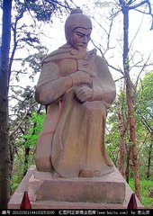

黄盖
黄盖(生卒年不详)，字公覆，零陵泉陵(今湖南省永州市零陵区)人。东汉末年名将，历仕孙坚、孙策、孙权三任。早年为郡吏，后追随孙坚走南闯北。孙权即位，诸山越不宾，黄盖活跃在镇抚山越的一线，前后九县，所在悉平，迁丹杨都尉。
黄盖为人严肃，善于训练士卒，每每征讨，他的部队皆勇猛善战。
建安十三年(208年)赤壁之战时，黄盖前往曹营诈降，并趁机以火攻大破曹操的军队，是赤壁之战主要功臣之一，以功拜武锋中郎将，他也因为此事迹而被后人广为传颂，小说《三国演义》在刻画黄盖这一人物时描写了"苦肉计"的故事。不久武陵蛮夷反，攻打城邑，黄盖以五百人，放其半入，拦腰截击，大破诸贼。春去夏来，寇乱尽平。后又平讨长沙益阳县山贼，加偏将军。官至偏将军、武陵太守。有一子黄柄。
侍奉孙氏
本为南阳太守黄子廉后人，但家族分离，黄盖祖父迁到零陵居住。 后来乡亲都死去，黄盖生活艰难，但仍有壮志，虽然贫穷，仍常负薪警戒自己，又自习读书、学兵法。之后担任郡吏，再被考察为孝廉，升任公府。 初平元年(190年)，孙坚举义兵，黄盖跟随了他。孙坚南向击败山中草寇，北往击败董卓，于是任命黄盖为别部司马。 初平二年(191年)，孙坚战死，黄盖先后追随孙策、孙权，披甲转战南北，冒死攻城略地。
安抚山越
山越诸部族不愿归服孙吴，或者有贼寇作乱的县份，总是用黄盖为那里的地方行政长官。 石城县的官吏，特别难以约束管理，黄盖便任命两个掾史，分别主管各部门。 他教导这两个人说:"我这位县令无什么才能，只是凭武功得官，不是做文官而出名。如今贼寇未被平定，我常有军旅任务，把一应公文处理事务全托付你们两位，你们应当监督检查各个部门，纠正揭发他们的错误。你们在本职范围内，办理或应承事情，若有蒙骗奸欺行为，我不管怎样也不加以鞭抽杖击的处罚，你们只是各自尽力尽心，不要给他们带坏了头。" 开始两个掾史畏惧黄盖威严，日日尽恭职守，久而久之，这些吏员以为黄盖不看文书，渐渐荒疏了公务。黄盖也不满他们的松懈懒散，不时有所省察，掌握到他们各有不守法的几个事例，于是把县内所有官吏请来，设宴酒肉招待，拿出违法乱纪的事例责问。两名掾史无话可说，都叩头请罪。黄盖说:"以前已告诫过你们，最终不会以鞭、杖来惩罚你们，绝不是骗你们的。"于是杀死这两个人。全县官吏震惊恐悼栗。 后来他转任春谷县县长、寻阳县县令。他前后任职过的九个县，全都平安稳定。又升任丹杨都尉，抑豪强济贫弱，使山越诚心归附。
赤壁献策
建安十三年(208年)，北方曹操南下，黄盖跟随周瑜跟曹军于赤壁作战，两军对峙，黄盖提出火攻战术，并亲往诈降，周瑜认为可行。 交战之日，黄盖准备了几十艘蒙冲、斗舰，满载薪草膏油，外用赤幔伪装，上插牙旗，在船后系上走舸。黄盖先向曹操投书通报投降，使曹军看见黄盖船只前来而毫无戒备。黄盖遂令燃点柴草，同时发火，火乘风势波及曹军岸上的军营。黄盖在战争途中不幸被流矢所中堕下水中，被救起时，吴军居然认不出是黄盖，将他安置在厕床中。黄盖惟有自己大叫呼叫韩当，韩当发现他时，流着泪地解开他衣服，才得以保留性命。虽然如此，但仍大败曹操，被受任武锋中郎将。
老当益壮
建安二十四年(219年)，武陵发生蛮族叛乱，进攻城邑，黄盖被调驻为太守，当时郡中只有五百人，黄盖运用战术，大开城门引蛮兵入城，入了一半时，立即发动攻击，斩杀数百人，并收复所失的城邑，斩杀其领袖，放了投降者。以一季的时间，平定所有的乱事，当地的各部落的头目对他以礼相待。 不久，长沙郡的益阳县也受到山贼的侵犯，黄盖再次平定，孙权便升他为偏将军。最后病死于任内，国人都思念他，及至孙权登上帝位，追论他平生功绩，赐予他的儿子黄柄爵位为关内侯。
人物评价
黄盖外表形象严肃刚毅，善于照顾下属，每次出兵作战，士卒都奋勇争先 ;处理事情果断，从不拖延，吴国人都怀念他。
历代评价
陈寿:凡此诸将，皆江表之虎臣，孙氏之所厚待也。 韦曜:盖少孤，婴丁凶难，辛苦备尝，然有壮志，虽处贫贱，不自同于凡庸，常以负薪馀间，学书疏，讲兵事。 蔡景历:武夫则猛气纷纭，雄心四据，陆拔山岳，水断虬龙，六钧之弓，左右驰射，万人之剑，短兵交接，攻垒若文鸯，焚舰如黄盖，百战百胜，貔貅为群。 庾信:乍风惊而射火，或箭重而回舟。未辨声于黄盖，已先沈于杜侯。落帆黄鹤之浦，藏船鹦鹉之洲。 章如愚:如程普、黄盖、甘宁、徐盛、潘璋、朱然、朱桓、贺齐、凌统、全琮、吕范，皆智足以御众，勇足以却敌，未有不为守令之职者。 郝经:程普诸将皆江表虎臣，鏖兵卫主，攻坚轧敌，兴王定覇，孙氏兄弟卒立国建号，诸将之力也。若黄盖之水战而用火攻，能用竒者也;蒋钦之不挟私怨而举徐盛;凌统之亲贤下士轻财重义;陈表倾家养士妻子露立，并有良将之规。甘宁之奢侈、潘璋之不法，权皆容之，许宁报苏飞之恩，不使统复父，操之雠驭将之术也。丁奉恃功而骄，不容于虐主，宜哉!""吴将剽轻，殆多谲计。莫肯下人，卒自称帝。摩创抚孤，动辄流涕。驾驭有术，驱策有方。果保江东，不负桓王。
主要成就
黄盖除了在赤壁之战献上火攻计策外，黄盖追随孙策平定江东，也立下汗马功劳。等到孙策去世，黄盖继续在孙权手下效力，前后侍奉孙家三代，是江东元勋。
家族成员
父:黄安，字孚仁，黄香第五子黄瓒之长子。 子:黄柄，孙权称帝时，追论黄盖之功，被赐关内侯。
墓址
黄盖墓位于安徽省芜湖市南陵县许镇镇(原黄墓镇)，墓围十余米，碑曰"丹阳都尉偏将军黄盖墓。"黄盖墓重修于清康熙年间(1721年)，文革惨遭劫难，亭子被毁，墓碑遗失，旧年逢清明冬至年节，有众多村民前来祭扫。俗习有以桃枝作弓，丝线作弦挂于碑角，祈佑子孙神勇忠达。
黄盖湖
黄盖湖，位于湖北省赤壁市西北湘鄂交界的长江中游南岸，湖南省临湘市的东北角，属湘鄂两省天然边界，地处长江之滨，距湖北省赤壁市35公里，距"赤壁之战"风景名胜区9.5公里。公元207年，赤壁之战爆发，黄盖为东吴水军主将，在黄盖湖操练水军。赤壁之战后，孙权论功行赏，以此湖赐黄盖，并命名为黄盖湖(原名太平湖)。 但在当地盛传的是，孙权送给黄盖的只是一块地皮，并非湖泊，黄盖家族在此地建有黄盖府，但后来历史上发生了大地震，洞庭湖水内倾，加之黄盖府下陷，形成了一片湖泊，故世人称之黄盖湖。
黄盖镇
黄盖镇位于湖南岳阳临湘市东北部，地处湘鄂边界，是由北入湘第一镇，扼湘北咽喉，守湖北门户，是湖南省边境重镇之一。北枕长江黄金水道，与湖北省洪湖市隔江相望，东濒湖南省第二大内陆湖-黄盖湖，与湖北省赤壁市划湖而治，南部、西部与江南镇、乘风乡为邻，地理位置十分重要。